来源：https://wtvb8cz8nx.feishu.cn/docx/HkBRdCR3goacbZx8G3pcP9YanyU
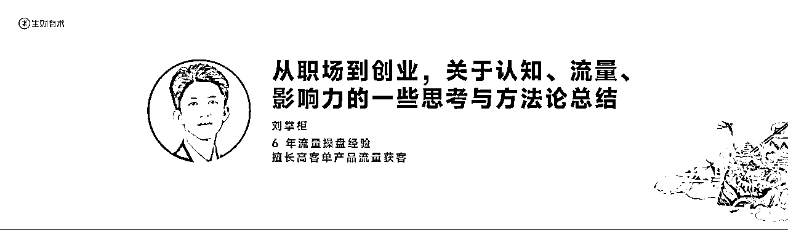
哈喽，大家好，我是圈友刘掌柜，也是咱们广西群的群主，首先，非常感谢咱们生财官方能够来到我的家乡——南宁，举办城市见面会，让我有机会一次性见这么多生财圈友，有机会和大家一起交流生财方法。
先简单的自己我介绍一下，自己是做流量做了六年时间，业务经历三轮“代运营——知识付费——自营业务”代运营累死累活挣不到什么钱；知识付费有成材率，会影响口碑，也放下了；直到现在做了自营的业务，我们解决流量解决获客，找好的后端合作。
22年离职出来创业，到现在也算拿到一些小成绩。然后今天有机会和大家聊聊关于自己《从职场到创业，关于认知、流量、影响力的一些思考与方法论总结》
为什么做了这三个选题？霜仔老师联系到我的时候，我就非常激动，包括现在站在台上也是激动的感觉脚都不听大脑指挥哈哈哈哈。做这三个选题，我想着现场来的会有各行各业的圈友，思维认知，引流获客，影响力搭建这些是我们生财变现路上比较共通的点。希望能通过这场分享，给到一些启发。
过去每年都会外出参加一些商业博主的线下课，参加多了就会发现其实精华的内容5分钟就讲得完，对自己有增量的可能就1-2个点，也就是这1-2个点在未来可能发生蝴蝶效应；希望大家都能从今天的嘉宾老师们分享和圈友的链接中收获属于自己的“精华5分钟”，然后我们的分享正式开始
这块分为了两个部分去讲，在职场和在创业的时候，分别发生在21年上半年，22年下半年。一起来看
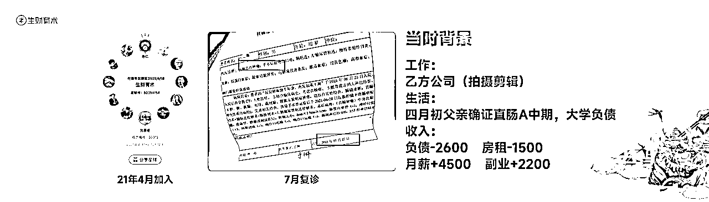
21年那个时候自己是处于什么样的情况，在一家乙方公司做拍摄剪辑，父亲四月初确诊直肠ai中期；因为之前大学瞎投，每月负债支出2600，房租1500，当时月薪4500加上副业2200，一个月勉强生活
那个时候可以说经历人生第一个地狱时刻，包括到现在脑海里有三个画面依旧很清晰，其一，第一场手术做了 8小时期间亮了一次红灯，吓的我妈回到住院楼去拿我爸经常穿的那件红色衣服抱着（平常出去做工穿的最多的一件）；其二，是医生通知做第二场手术，医院里黄蓝相间的住院部走廊，安静的吓人......其三，就是术后老爸发烧不退一直吐，老妈不忍心看一个人坐着一直哭
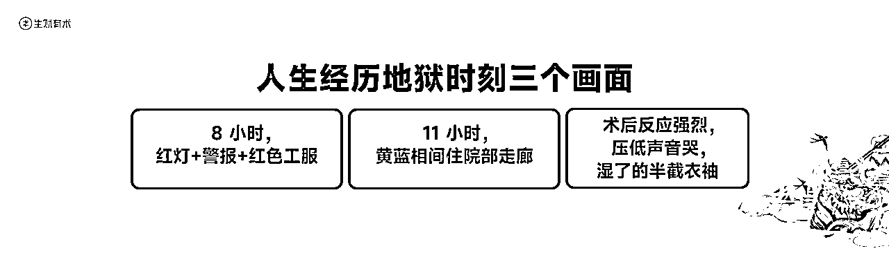
是的，就是在这种时候我加入了生财
那个时候我特别害怕的事情，就是出了个什么治疗的特效药，是自己负担不起的，更不想未来因为钱失去些什么。这个话题很沉重，对于那个时候的自己来说更加像大山一样。
但是我想没有比当时那种情况更糟糕的了，我是19年知道的生财，两年都肉疼舍不得下手，可能是因为不够痛苦所以，没有行动，经历了地狱时刻，心力是在发生改变的
21年动手了，再差还能差到哪里去，万一有机会改变呢，所有转机性的事件发现在信息层，发生于执行层。如果你和我一样，感觉处于低谷觉得迷茫，勇敢向前一步，就是柳暗花明。到底如何应用手册完成赋能的，我们一起接着往下
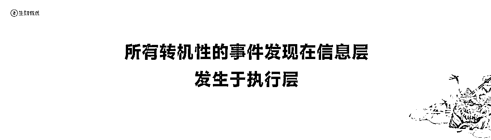
大多数都寻求全局最优解，信奉长期主义为先，但是我觉得对于大多数普通人、草根创业者来说，哪里顾得上全局，和长期主义，没有什么比在1-3个月看见变现更好的了，更多是着眼于当下。
职场选择上，局部最优解——选工资高但没成长的工作（短期赚得多），全局最优解——选工资低但能学技能的工作（长期发展好）；我理解职场上的成长一是思维认知，二是专业节能，而这些你都可以付费买得到。那如何快速的拉高薪资呢，就是跳槽，拿溢价，选工资高的入职。
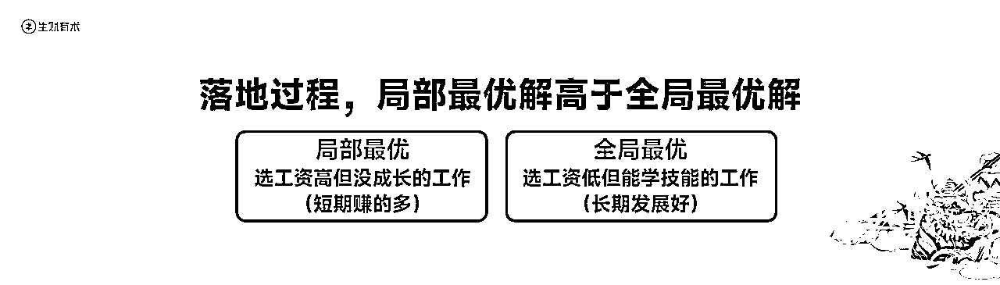
最早期只是新媒体运营（文案）然后会拍摄剪辑而已，去面试前的三个动作
一，我好像还记得那个好像是最早的一期航海，就是抖音商业IP1.0看了一遍
二，把生财当搜索引擎，还去搜了同城实体方面的精华帖
三，下载相关的工具表格文档当iPad
一套组合拳下来，面试岗位就拿下了。综上，我觉得对于每个刚刚进入或者进入一年内的圈友来说都可以先去争取局部最优解
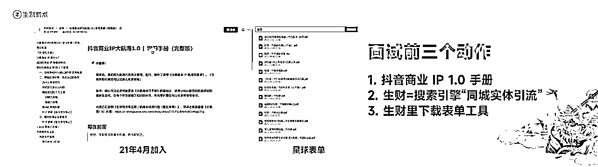
前面我们提到利用航海手册已经完成了入职，还可以帮助我们积累优质群体和搭建基础信任。
生财无异于是一份巨大的信息宝藏，优质的信息只有在传递的过程当中才能发挥价值。优先推荐这下面个航海手册
抖音的1.0和2.0
小红书运营
朋友圈运营
时间管理
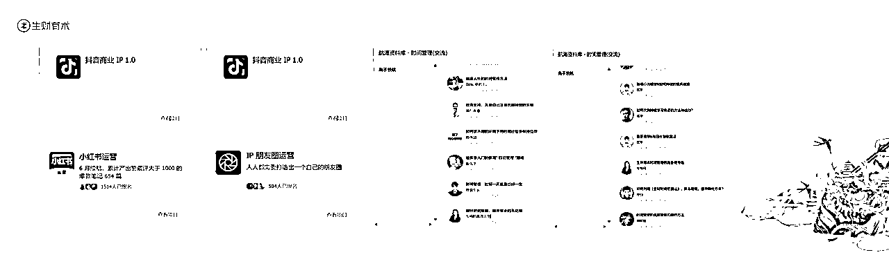
为什么推荐上面这四份，阅读完基本上你把公域，私域以及个人管理都了解了个遍，出去外面站在运营的层面去给一些建议是没有问题的。至于最近上新的时间管理，鲁大魔说过一句话“普通人用时间和精力去撬动财富”时间对于草根创业者的重要性不言而喻，时间管理手册里的各位嘉宾分享的很有效提高时间利用率。
精华帖出去外面社交,活动行app+小红书搜索（读书会，创业群，自媒体群）
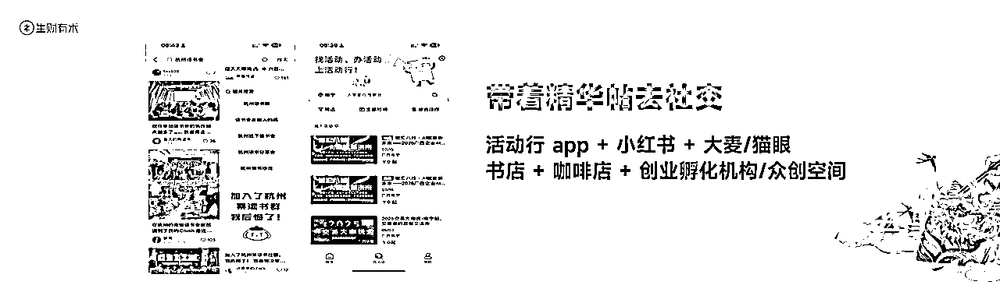
还可以用什么方式拓展相关客户，特别强调线下的见面和交流，这是塑造信任最快的一种方式，我最常用得两个方法一个是活动行app，另外一个就是小红书搜索，我经常在南宁本地看见的，读书会，沙龙，自媒体交流等。在年前参加了一场聚会，是广西本地一个做酒的老板，他说以前都不用跑这种场合交流，客户上门自然进店很多，现在不知道为什么少了很多，都在增加线下场景，消费都发生在熟人圈，内循环的。
那线下关键之一，成为未来客户的兴趣专家，你的客户是宝妈，讲育儿讲家庭关系讲资产配置；你的客户是老板，讲组织管理讲股权架构讲流量渠道等等。
每次去之前我都会看两三篇精华帖的内容，把他凝练成“精品五分钟”的内容，全是增量。然后在交流的环节去q自己准备的内容。讲多了，慢慢就是c位了。
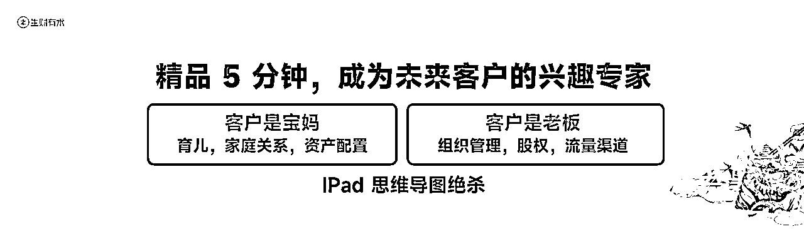
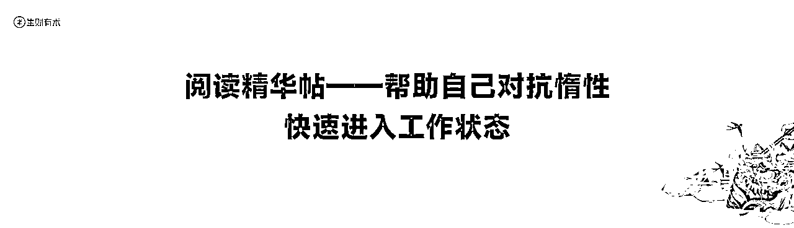
精华帖对我个人来说还有一个非常非常有帮助的作用，就是自己在创业后有一种小地主的心态，以前怎么也没想到自己可以一天挣父母一个月的收入，就开始得过且过，每天工作时间很少，可能就三四个小时。每天看看精华帖，高密度的信息在脑子里炸开的时候，能够帮助自己很快进入工作状态。知道人外有人，天外有天。
那其实这个时候已经是我创业有一段了，就是有的时候流量下滑，封号频繁的时候。不知道干什么的时候就先干点什么，那同龄人又给不了自己什么增量，就想了这个办法。
找对目标，制作简历，投递简历。
人有一项非常重要的能力就是抄正确答案的能力，和我们做流量一样。面试的这个过程也是我们不断追寻正确答案的过程。主要有三个方面大概讲一下。
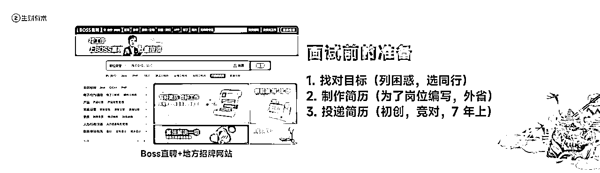
找对目标，你遇到的困惑，先列举出来，同行那里就是最好的答案，优先把同行列举出来，选择三家
制作简历，其实是拿公司boss直聘上的要求，为了这个岗位定制编写简历，面试中高层，广西城市HR之间是有群的，为了防止进黑名单，你就说是外省哪个城市的。
投递简历，7年以上公司，竞对公司，初创企业，一圈问下来或多或少都有答案了；其他两个不难理解，7年以上的公司这个是什么意思？能活这么长时间的企业，领头羊肯定是有东西的。
我们面试的是中高层，问清楚有几轮面试，肯定会是一二面，大公司还会有三面
基本上会经历，人事，部门总监，总经理/企业股东
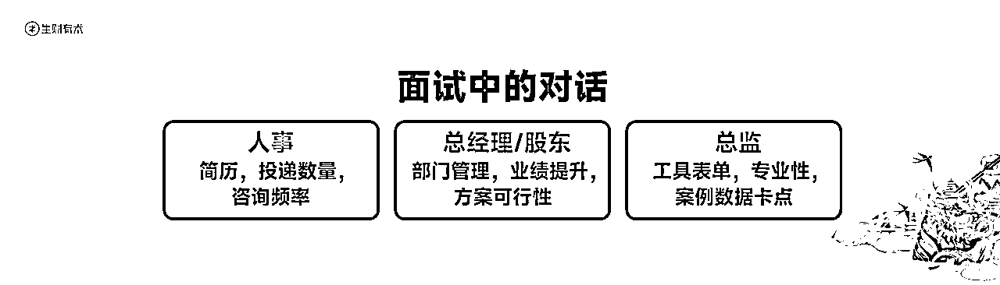
人事那关过不了就是简历，咨询频率问题
总监那关，工具表单，专业性，案例数据有时间卡点
总经理/股东，你入职以后怎么做（部门管理，业绩提升），方案的可行性
只要你准备充分，又带着生财信息去的面试基本都能到最终轮，能到这里其实都是认可你了的，这里就是找准机会时间去问，你的困惑就好了！
面试这个技能用得好，真的很棒，到这里我再延展一下
加个人背书；面试过程素材化，其实就是拍老板茶桌，进公司的视频；有影响力的公司其实是正衬你的，行业圈子就这么小，举个例子，倘若我们跟杨涛老师，跟亦仁老师合照，最起码圈友眼中的你是正向积极的，就像很多商业线下课，去跟iP本人合照是一个道理，在你客户粉丝里就能感觉出来，你是一个好学的，我给你付费是值得的。
再延展一下，客户眼中你的能力水平如何是由你的朋友圈决定的，他加上你，哪里知道你人怎么样，但是你带着这些图片素材，加上自己的观点，有的人的朋友圈像看电影，很容易在用户心中萌生对你的信任。
卧底打通瓶颈链路，了解相关参数；（牛人他就是能够通过基础层的信息找到破局的点，还有个直播间连麦的每天0.1元灯牌）如果说你能走到这一步，就是争取当下或者次日的试岗，那你的收获真的更大了，大家都知道，好的内容形式模版是有流量周期，流量模版发出去越多，流量下滑越多，客户量也会下滑，这个时候你就可以去看看竞对公司的模版和话术，去看去记。
前面我们说了职场到创业的一些细节故事，那这里讲的可能更多的就是流量实战方面的了，一般听到这里可能大家比较困了，可以喝点水清醒一下。
好，我们继续，包括我们自己过去也遇到流量困境——花钱投流买不来正向的投产，不花钱自然流看着团队的编导运营嗷嗷待哺，咨询付费不给力没有客户
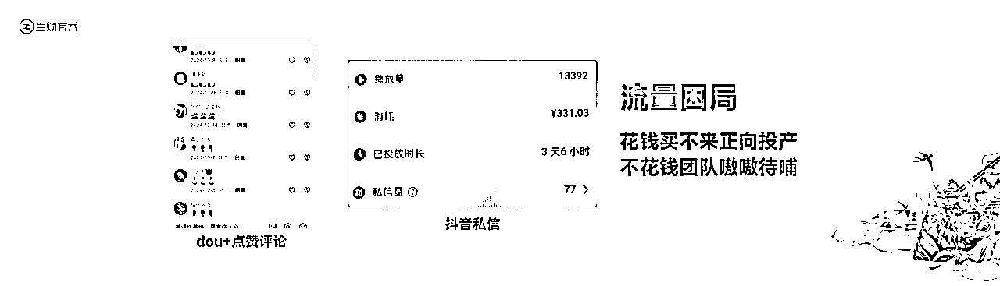
付费和自然流我们该如何权衡？其实付费是省事的，就是算账的问题罢了，投5000，营业额4w，利润1.5w，毫不犹豫直接上车；但是大多数公司团队是没有这个能力的，有能力的会自己干代投，不会在你公司窝着。矩阵自然流，跟着平台政策走，不确定性多，但是成本低，性价比高。
那我们给到的建议，初期的时候偷流量做矩阵，其实有的时候做矩阵其实是对抗平台违反平台的，有了一定条件，买流量做付费，顺应平台规则会发展得更好。
这个怎么理解？两个账号，A做为用户视角，圈相同人群，B，素人账号做无利益关系推荐；用大白话理解就是假装水军自己推荐自己的产品。
我们来看几个账号帮助理解一下
①a用户长痘的视频吐槽影响颜值，b之前也是这样，用了闺蜜推荐的......
②a用户吐槽老公说她胖，b问拿的什么产品......
③a发布去实体台球厅，b问在哪里发位置
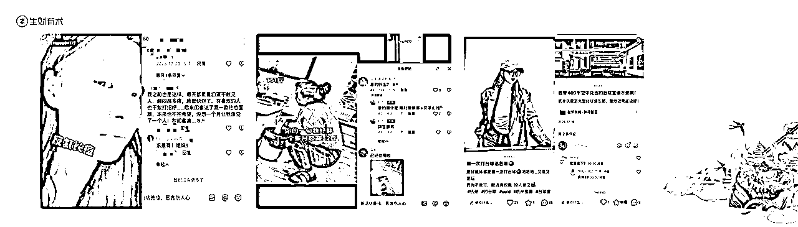
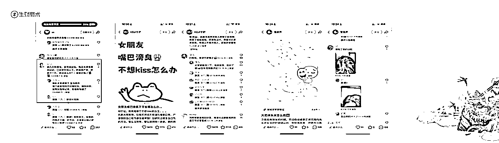
值得注意的是中间那张图，“已购买，希望不是骗子”“大家提醒我，我会反馈”拿了可以马上用的，很简短用力的站用户视角去解决问题，下面紧跟一堆评论，都是精准需求的客户。
总的来说，就是a用自己的遭遇故事，表达出痛点；b发出共鸣和理解，植入产品
制作用的素材为了能做到矩阵分发可能要涉及去重这个动作，下面是我们说的去重的一些动作要点：
画中画，调节调色，
删除原声，变速调节，
转场，画中画，尺寸放大，导出关键选择1080p，帧率50fps
这个是一月份，广西的一个群友发在群里的，吐槽所有账号链接到最后都是我。我觉得矩阵最大的好处就是能用同一个内容，这个内容涵盖到的iP/产品/门店/服务多次触达一个人，人们对经常接触的事物有更高的接受度，逐渐从了解到购买。
这就有点像什么呢？就是我们再朋友圈做生财拉新一样，朋友圈一个人发，可能会觉得是广告，但是朋友圈很多人都在发，会考虑这个东西真的有这么好吗，朋友圈牛人和朋友们都在发。开始尝试了解......
那我们的矩阵是怎么做的
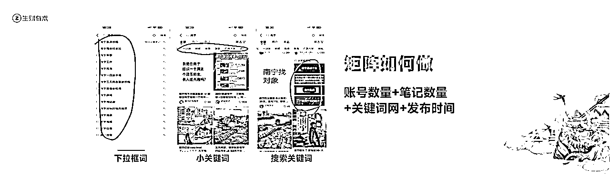
账号数量+笔记数量+关键词网+发布时间；前面两个比较好理解，就是多少个账号发布，发布多少篇笔记，关键词网就是下拉框词，小关键词，搜索关键词。发布时间（解释怎么看），其实就是，行业不同，用户活跃时间不一样，早期的时候，发布可以覆盖全天时间，得出流量好的时间。
在说内容组合之前，我们先看一下我们成交丝滑的短视频账号有哪些阶段内容？
种草安利，这个阶段的目的是刺激需求，可以发布和产品相关产品介绍视频，为什么选你的产品，你的产品解决什么问题等等
发现看见，客户见证，产品使用体验过程，链接每日热点，同城热点，账号的流量内容
信任搭建——理性信任（专业知识/案例/售后/团队/背书）
感性信任（个人情绪/友善热心/原则/缺点/热点/故事）
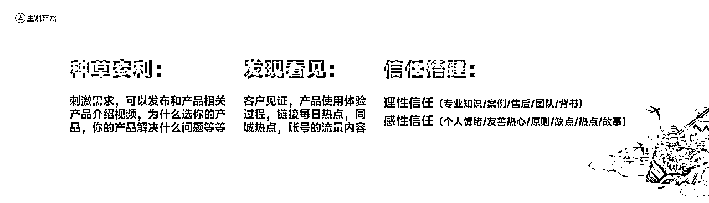
很多账号视频经常看见一些十年体视频，一个普通女孩的十年，二十年餐饮人的独白，你为什么要做这个等等都属于信任搭建
内容组合
这个目的就是把账号伪装成一个活生生的人。然后是职场女性
情绪流量内容（真的崩溃，我第一次哭，好生气啊）
日常生活内容（产品遭遇，身份大学生,工位出勤，旅游）
同城热点内容（看热点榜，看微博）
产品推荐合集——最为关键的内容，举个例子，如果我们要做别墅设计，那可以说去几家别墅设计公司沟通体验，最后一家举例说自己家的产品。
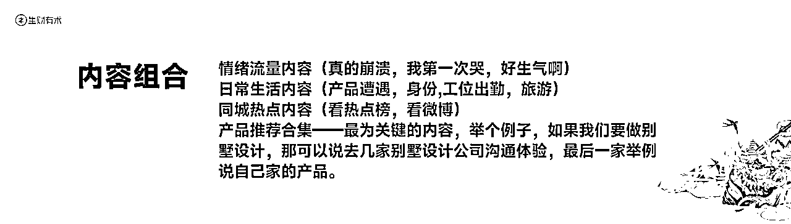
矩阵执行的三要素就是网络，设备和模版。
网络，我们会选择软路由（跳IP），这个和宽带公司说，他会帮你解决，真的要问什么是软路由我也不知道，发布作品用网络发布
设备：优先苹果，自己目前在用的是8p
我们自己执行落地过程中发现的一些细节，不百分百保证对，但是我们执行过来看见是这样：
账号优先使用厅卡靓号，在注册厅卡前要去搜一下手机号有没有没注册过
设备越贵流量越好
经常带设备出去逛逛，连一下其他地方网络，你这个手机一动不动，一直都是这iP
流量如果遇到瓶颈，老是卡在几千播放量，五公里之外，也可以换人发，剪辑的网感是不一样的
不能一直吃老的模板，前面要有人测试新的内容类型
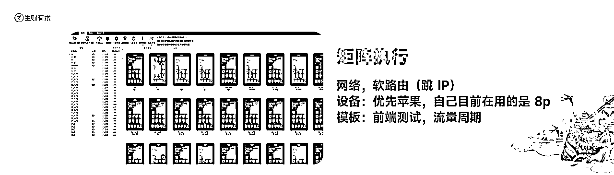
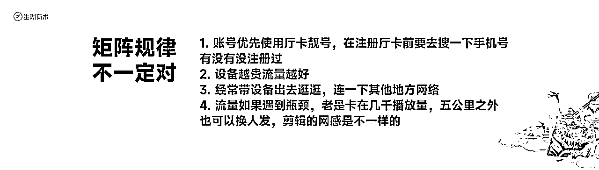
链接撬动生财，说到这里，真的又不得不感叹一下我们生财有术是一座巨大的信息宝藏，如果说信息是一种权利，那影响力可以说是资产，无形的资产，罗永浩的真还传就是最好的说明。这里说的五分钟影响力塑造，指的就是每天花五分钟可以提升自己的影响力。
我相信会有部分群友和我一样，付费了就是学到了，很少再打开，只是有的时候忽然想起会看看，你知道生财好，但是生财在你没有行动之前，没什么作用。那这五分钟影响力塑造都是行动成本很低，但是效益很大的一件事。一起来看看
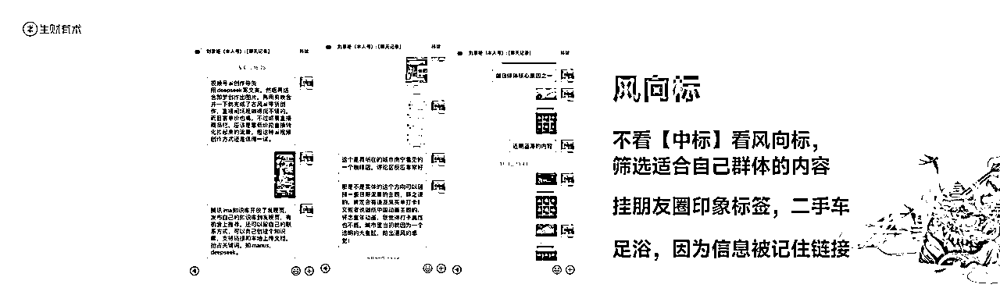
风向标我觉得单独抓出来都是一款非常好的产品，信息领先互联网市场半年的时间！都是金矿，这些信息我们可以利用碎片化时间去做筛选发布在朋友圈。自己实操过来，其实不建议老板直接在中标里筛选，可以去看风向标，因为有的圈友发出来的信息虽然没有中标，但是还是很符合你想要触达的目标人群的。
你的动作很简单，就是每天早上上班前，筛选那么两三条发布到朋友圈就可以了。久而久之，不再是xx行业老板，别人会对你打上，信息前沿的标签。举个不恰当的比喻，不知道大家有没有刷过一个二手车的账号，那个号的老板，不拍车，就拍去足浴打卡。别人会因为你发出去的价值信息记住你，有需要会链接你。
只有是萌新的时候，打开生财的次数才比较高，有一些老油条打开的次数已经很少了，这里有一个哪怕是老油条也容易被忽略的栏目——亦仁的收藏夹。
我觉得这个栏目是自己践行“深度影响少数人，持续陪伴大多数”的燃料之一，传递价值我觉得就是形成影响力的一种方式，生财最不缺的就是价值信息。可以把亦仁的收藏夹的内容自己阅读消化，结合当天工作或者个人整体的阅历做一次表达。
我看见早期很多传媒公司的老板的朋友圈，都是这么来的，阅读价值信息后，结合自我观点表达出来，但是关键词不会改，这也是为什么自己早期在没什么实践的时候也能做一些比较高质量的表达
综上，这里可以提一下，如果老板有时间，其实可以单独拉群，这样效率会高很多，而且可以形成以你为中心的沟通，群里肯定会有那么一两个原点客户，能够给你带来辐射效益帮你成交一批的客户量，最后，哪怕大家什么都没有执行，我觉得把上面这些个动作做到位了，对你的事业也会有不小的帮助，未来的某一天会发光
最主要的生财带给了我社交自信，我记得很清楚20年那个时候我去了一家南宁做金融的公司老板做交流是很怯场的，说的不到两句话就走了，前面也提过，会做准备，脑子里最起码有一两个项目的思维框架，脑子里有东西，不管过去多糟糕，现在的自己就是美玉一块。
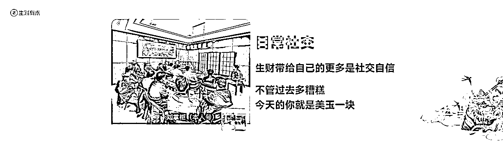
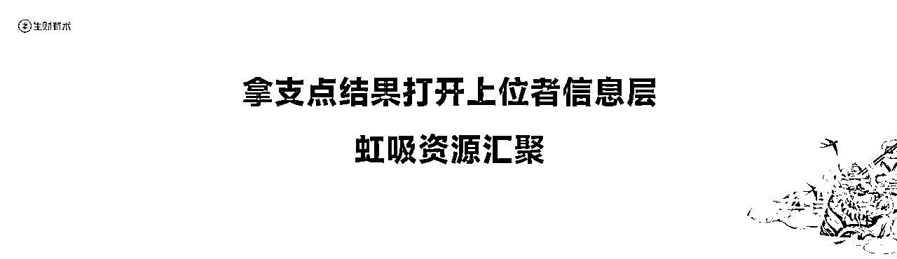
事半功倍的社交一定是价值对等，这里，我觉得拿到支点结果非常重要，社交场合也是幕强的，如果你是奔着增加阅历听故事去OK没什么，但是如果想在现场有链接到什么对自己有实际帮助的，我觉得很难，看的更多，内心只会更焦虑。
支点结果成绩能够让更高层面的人看到你，认可你，会有新的信息层被打开，虹吸资源汇聚到自己身边。
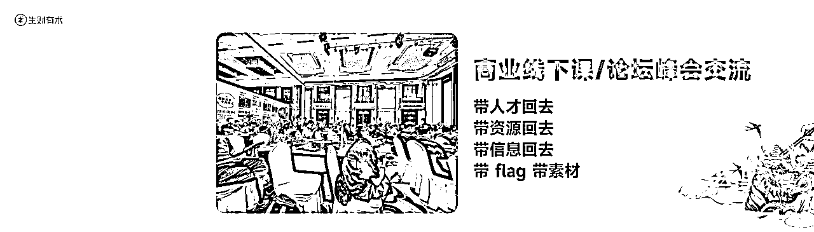
学会提问，了解对方的专业领域，提前准备好问题（表达自己对问题的初步看法-观点和见解，加深大牛印象），要具体清晰，选择合适的时机，积极聆听回应，不要影响整体时间。推荐两本工具书《关键对话》《提问的力量》
学会介绍，如何让现场的人对你印象深刻，那就是讲你心中称量出来的精华内容用生财的信息给自己贴一层标签，如果我想贴流量专家的标签，我会具体看流量相关的精华帖，沉浸的看四五个小时，整理3-5个自己看了都觉得非常有增量的方法去现场。把握好分享机会，大部分时候会让人眼前一亮。准备1-2个有记忆点的金句。
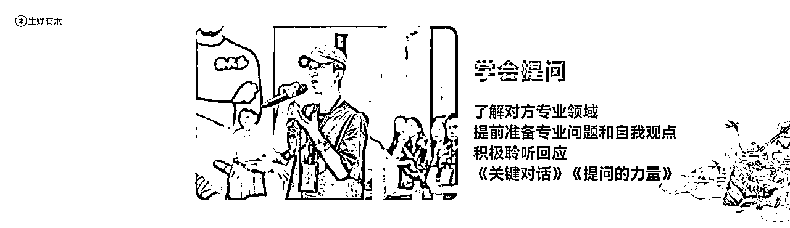
留到最后，我觉得这个才是每场线下关键的，也是我每次外出学习收获最大的时间，就是第二场小场交流，针对现场参加第二场的找准目标和他关联。这种场合是因为现场你们是参会伙伴，才有机会一起交流，大佬这个时候的发言都非常真诚有效落地。
我记得在加入生财的那个时候，都有自己的生财小目标，21年想着说，要拿到精华帖，22年做到了；23年想着进龙珠群也就是现在的航海家，24年完成啦；24年参加线下的时候想着说，要有机会争取在生财圈友前做一场分享，今天完成啦，那未来希望好好努力实现双倍三倍增长，继续生财有术，感谢大家，我的分享到这里结束
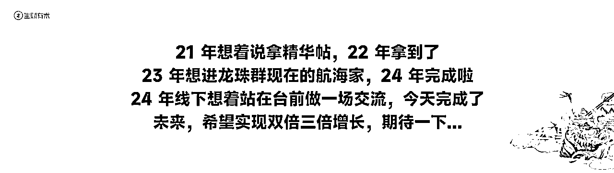
———————————————————————————————————————————————————————
下面这段话我发在朋友圈，激励自己，也和所有圈友共勉！“也许你的遭遇很不幸，很不公，但是，请跑到终点了再哭......”
在台上，我差点哭出来......
15日有幸做嘉宾上台分享，讲自己为什么创业，特别害怕因为钱失去些什么，人生地狱时刻那几个画面历历在目：
21年四月父亲第一场八小时的手术，警报响起吓得妈妈跑去拿我爸那件红色工服抱着坐在手术室门前念着“你爸没事的”......过了好几天，医生通知我们情况不是很乐观要做第二场手术，医院黄蓝相间的走廊安静的吓人......在说这一页ppt的时候，自己哽咽了，强压着情绪。
一场大会没什么大不了，以前也有过，但生财是因为当初什么都没有的时候就它陪着我一点点升级打怪，医院通宵陪床的时候就看看精华帖......职场用生财信息拿跳槽溢价......项目迷茫了就问大师兄涛哥......
直到15日下午站在台上，有一种孙悟空对唐僧说“师傅，我也收徒弟了”的骄傲，有一种解放军像一束光把小孩从灾难里救出来，十多年以后小孩当兵回敬军礼的那种自豪，所以那天夜话我掏心掏肺讲我知道的全部。
“跑到终点了再哭”这一杯酒敬自己